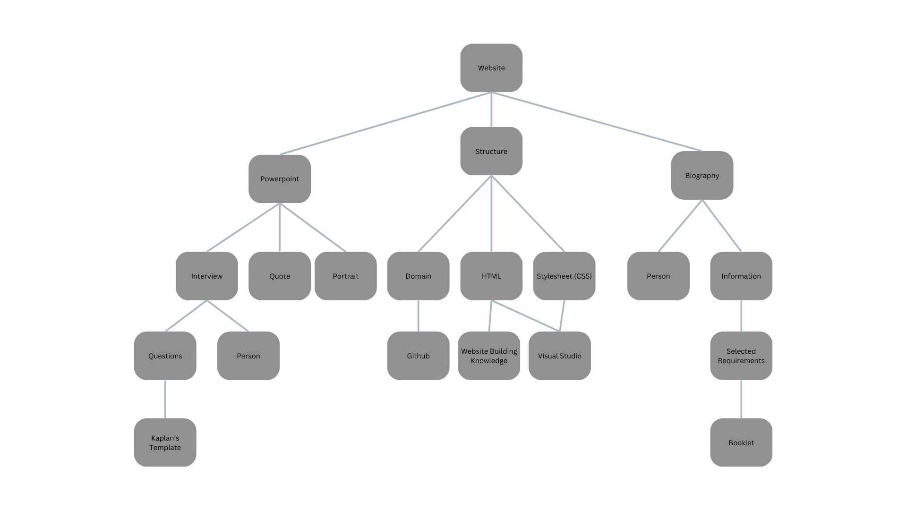
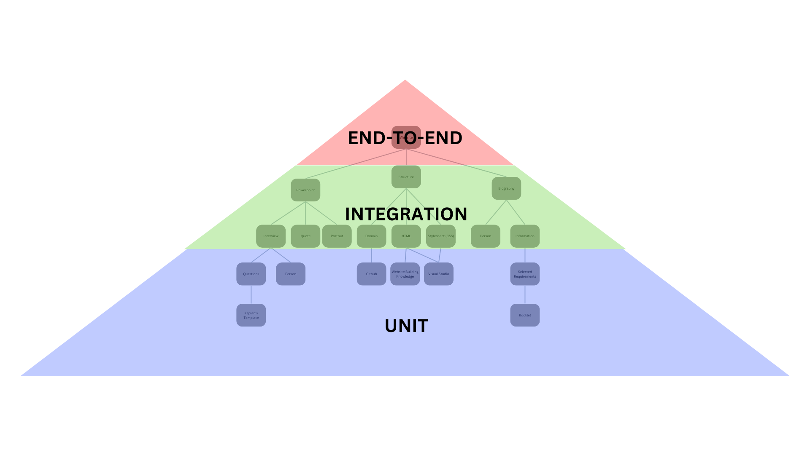

insert quote here
For my Pamela Melroy project, I had the opportunity to interview Robert Bell. This was an amazing opportunity and helped me understand and learn more about coding and system implementation. Below is a video with the questions and answers that were asked in the interview
Robert Bell was born in 1985 and grew up on King Island in a standard working-class family with two parents and two children. In his early adult years, he had joined the army, and it was there that his platoon’s lieutenant offered him a software development job and he eventually just stayed there. An achievement that was made during his time in software was his team in a previous role grew to total of around thirty people. He was also able to witness junior software developers build their skills and confidence over his years in the industry. One common challenge that Bell has faced over the years is burn out. To overcome this challenge, he had to use a simple strategy. First, he needed to be aware of burn out in himself or his colleagues, then either take a break from the task at hand or change your approach to something new. An end to burn out is possible when it is possible to get on top of it before it becomes too serious, however it can return at any point.
One major concept from the interview that quite interested me was the testing pyramid. This is a commonly used way to find a definitive process of creating the ideal product. It works by looking at the product and finding the requirements needed to create this product (Integration tests), then looking at what needs to be done to meet those requirements and it keeps going down until you have the very basic foundation steps that each other step is dependent on (Unit tests). You can easily find what the requirement depends on by think 'what needs to be done before I can do this'
As an example, the image below is a testing pyramid I have made for this project. At the top is the final product, that being this website. From there I have brainstormed what components of the website need to be complete before the website itself is created and presented. Let's take the PowerPoint component as an example. In order for the PowerPoint to be complete, I need to have completed my interview and found a suitable quote and picture of my person. In order to have completed my interview, I need to have created my questions. And finally, if I want to make my questions, I need the Kaplan's template.
Now that I know that the first step towards the PowerPoint component is to retrieve the Kaplan's template, I now have to continue the same process until I have the first step to every component and know exactly where to start
It is important to note that this process is not exclusivly for coding and can be used in almost any area that has a final product. It is a very important step in the process of finding where to start.
 